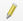

Справка 7 Использование QGIS во время полевой топографической практики
7.1 Создание топографического плана
7.1.1 Создание схемы теодолитного хода
7.1.1.1 Шаблон схемы теодолитного хода
7.1.1.2 Работа с базой данных
Для схемы теодолитного хода следует создать отдельную базу данных, в которой будет несколько классов объектов:
● Стороны хода
● Дуги внутренних углов хода
● Точки хода.
Создать базу данных можно, нажав правой кнопкой по выбранной вами директории в браузере (проводнике). Выберите пункт меню New – Geopackage.

Создание базы данных Geopackage
У вас откроется окно создания базы данных, где вы можете задать имя базы данных, сразу же создать один из классов, указав его тип геометрии и систему координат.

Окно создания базы данных
Остальные классы объектов вы можете создать, щелкнув правой кнопкой мыши по уже созданной базе данных и выбрав пункт меню New Table
Окно создания базы данных
7.1.1.3 Черчение хода
Для нанесение точек хода необходимо добавить в проект из базы данных точечный класс объектов простым перетаскиванием, либо дважды щёлкнув по ним в Браузере. Для редактирования объектов и добавления новых объектов в класс необходимо войти в режим редактирования. Для этого можно щелкнуть правой кнопкой мыши по слою и выбрать пункт Режим редактирования (Toggle Editing), либо выделить слой и найти на панели инструментов кнопку . Активация режима редактирования откроет некоторые другие кнопки на панелях. Например, для точечного класса объекта появится кнопка  . Нажав на эту кнопку, вы сможете поставить точку в произвольном месте.
. Нажав на эту кнопку, вы сможете поставить точку в произвольном месте.
Чтобы поставить точки по строго заданным (рассчитанным при уравнивании теодолитного хода) координатам необходимо использовать панель Advanced Digitizing Panel. Если она не открыта, щёлкните правой кнопкой мыши по пустому месту сверху основного окна QGIS и в выпадающем списке отметьте панель и окно.

Включение дополнительной панели векторизации
Нажмите на кнопку активации инструментов  . Введите координаты X и Y, закрепляя их замком (или нажатием на Enter). Щёлкните левой кнопкой мыши по карте – новая точка установится строго по заданным координатам. Сохраните изменения, нажав на иконку сохранения
. Введите координаты X и Y, закрепляя их замком (или нажатием на Enter). Щёлкните левой кнопкой мыши по карте – новая точка установится строго по заданным координатам. Сохраните изменения, нажав на иконку сохранения  на панели редактирования.
на панели редактирования.

Создание точки по заданным координатам
Для отрисовки сторон хода нужно зайти в режим редактирования соответствующего слоя. При векторизации объектов часто возникает необходимость пристыковать вершины одного объекта к вершинам другого объекта. Для корректной и комфортной пристыковки нужно включить панель Инструментов прилипания (snapping). Кнопка в виде магнита  активирует прилипание. Остальные кнопки на данной панели позволяют уточнить параметры прилипания, в том числе расстояние, на котором оно начинает действовать. Отрисуйте стороны с включенным режимом прилипания, нажимая на левую кнопку мыши для установки вершин и завершая отрисовку правой кнопкой мыши. Сохраните изменения.
активирует прилипание. Остальные кнопки на данной панели позволяют уточнить параметры прилипания, в том числе расстояние, на котором оно начинает действовать. Отрисуйте стороны с включенным режимом прилипания, нажимая на левую кнопку мыши для установки вершин и завершая отрисовку правой кнопкой мыши. Сохраните изменения.
Обратите внимание, что каждая сторона теодолитного хода должна быть отдельным объектом.
Для черчения дуг углов включите панель Shape Digitizing Toolbar, нажав на пустое место верхней части окна QGIS правой кнопкой. На этой панели вам потребуется инструмент, который строит окружность по центральной точке и произвольной точки окружности (последний в списке).

Создание окружности
Чтобы превратить окружность в дугу, нужно взять инструмент разрезания  и нарисовать линию реза (закончить рисовку линии реза можно через нажатие правой кнопки мыши). Выберите объекты, которые хотите удалить, с помощью инструмента выделения
и нарисовать линию реза (закончить рисовку линии реза можно через нажатие правой кнопки мыши). Выберите объекты, которые хотите удалить, с помощью инструмента выделения  и нажмите DELETE.
и нажмите DELETE.
7.1.1.4 Настройка символики и подписей
На схеме теодолитного хода следует различать точки самого хода и твёрдые точки, которые служат твёрдым направлением. Разная символика обуславливается разными значениями атрибутов данного класса в базе данных. Открыть атрибутивную таблицу слоя можно, нажав правой кнопкой мыши по нему и выбрав пункт Открыть таблицу атрибутов.
Для редактирования атрибутов необходимо зайти в режим редактирования с помощью кнопки . Для добавления или удаления атрибутивных столбцов также необходимо зайтив в режим редактирования, после чего появятся соответствующие кнопки  и
и  . Для того чтобы закодировать отличия точек хода и твердых точек, нужно создать новое атрибутивное поле и записать соответствующим точкам разные значения. Обратите внимание, что каждая строка в атрибутивной таблице – это, по сути, один объект в классе объектов. Выделять объекты в атрибутивной таблицы можно с помощью нажатия левой кнопки мыши по левому краю строки. Для выбора нескольких строк подряд можно «тянуть» выделение левой кнопкой мыши, либо выделить первый и последний объект с зажатым SHIFT. Для выбора нескольких отдельных строк зажмите CTRL. Выделяемые в атрибутивной таблице объекты будут подсвечиваться жёлтым цветом на карте. Для приближения к выбранному объекту нажмите на кнопку Увеличить карту до выделенных строк.
. Для того чтобы закодировать отличия точек хода и твердых точек, нужно создать новое атрибутивное поле и записать соответствующим точкам разные значения. Обратите внимание, что каждая строка в атрибутивной таблице – это, по сути, один объект в классе объектов. Выделять объекты в атрибутивной таблицы можно с помощью нажатия левой кнопки мыши по левому краю строки. Для выбора нескольких строк подряд можно «тянуть» выделение левой кнопкой мыши, либо выделить первый и последний объект с зажатым SHIFT. Для выбора нескольких отдельных строк зажмите CTRL. Выделяемые в атрибутивной таблице объекты будут подсвечиваться жёлтым цветом на карте. Для приближения к выбранному объекту нажмите на кнопку Увеличить карту до выделенных строк.
Для задания символики зайдите в свойства слоя точек, дважды по нему щёлкнув. Перейдите во вкладку Symbology (Стиль)
Окно настройки символики слоя
Сверху нужно выбрать способ символики Categorized, что позволяет категориально разделить символы по значению атрибута. В поле Value нужно указать название атрибута, по котором происходит разделение, после чего нажать на кнопку Classify внизу окна – в окне посередине у вас появятся все возможные категории, для каждой из которых можно задать свою символику. Дважды щёлкните по категории, чтобы задать символ.

Окно настройки символики слоя
Построение символики в QGIS иерархическое – каждый символ может быть представлен набором слоёв символов. Например, для создания знака временного геодезического пункта (кружок с точкой в центре) вы можете задать два слоя. Верхний слой – точка, которую можно задать кругом чёрного цвета уменьшенного размера. Нижний слой – тот же круг, но уже большего размера с белой заливкой и чёрной обводкой.
Аналогично точкам мы можем разделить по символики стороны хода и твёрдое направление. Для последнего нужно задать два слоя с линией, у которой будет задан параметр Offset, то есть сдвиг от оси.
Подписи аналогично символике зависят от значений в атрибутивной колонке. Для включения подписей нужно зайти в свойствах во вкладку Labels. Там вы можете включить подписи, выбрав Single Symbol и указав атрибутивную колонку, откуда будут браться значения (Value), а также гарнитуру, кегль шрифта и прочие настройки форматирования. Во вкладке Placement вы можете указать способ размещения подписей относительно объекта.

Окно настройки символики слоя
Не забывайте изменять изменения в самом проекте (они касаются набора слоев, их оформления, некоторых параметров) с помощью кнопки  .
.
7.1.1.5 Настройка макета компоновки
Для создания макета компоновки схемы теодолитного хода, то есть того, как схема будет выглядеть на листе бумаги, нужно вызвать Project – Layout Manager. В открывшемся окне нажмите на кнопку создания макета и задайте имя для него. После этого перед вами появится макет компоновки, который вы можете наполнить необходимыми элементами с помощью специальных кнопок слева.

Управление элементами макета
После добавления элементов схемы их перечень появляется в окошке справа вверху. Если выделить элемент, ниже открываются его свойства. Выделите элемент карты, запишите в его свойства масштаб. Систему координат выставить – WGS 1984 UTM 37N. В разделе Сетки нажмите на плюсик, чтобы добавить сетку. Выделив сетку и нажав на кнопку Modify Grid, мы можем редактировать её отображение.

Настройка сетки координат
В свойствах сетки выберите вид сетки – перекрестие, укажите шаг сетки, цвет линии – зеленый. В разделе Frame выберите interior ticks для показа выходов сетки наружу рамки. Длину выходов установить 3 мм.
В разделе Draw Coordinates сориентируйте боковые подписи выходов сетки вертикально вдоль рамки.

Настройка подписей координат
Для настройки рамки создайте ещё одну сетку, нажав на плюс в основных свойствах картографического изображения, затем нажмите на кнопку Modify Grid и настройте отображение рамки соответствующим образом.

Настройка подписей координат
Для экспорта растрового изображения выберите Layout – Export as …
7.1.2 Создание схемы нивелирного хода
7.1.3 Подгрузка пикетов тахеометрической съёмки
7.1.4 Векторизация объектов ситуации и рельефа
7.1.5 Оформление в условных знаках
7.1.6 Автоматизированная обработка высотных данных
7.1.7 Создание макета топографического плана
7.2 Привязка космического снимка по наземным опорным точкам
7.3 Работа с атрибутами
| Карпачевский А.М., Каргашин П.Е. Топография с основами геодезии. М.: Географический факультет МГУ, 2022. |